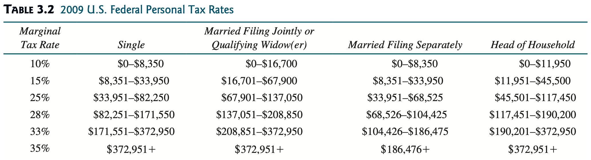

Practical 02: Selection Statements
We will now proceed with implementing selection statements in this practical.
Selection statements in Java include the if-else statement and the switch statement.
Activity: Shortening if Statements
Let's have a look at the following code snippet:
NOTE: This nested if statement structure is based on the grading scale in Taylor's College.
Recall that the contents inside the if statement block is carried out ONLY if the given condition is fulfilled/is TRUE.
The first if statement in here restricts the kind of marks that can be assigned a grade value (i.e., marks that can receive a grade must be between 0 and 100).
This means that if the program proceeds to look at the consequent if statements, you can be sure that marks is in between 0 and 100, and not out of that given boundary.
The first else if statement checks to see if the marks is between 0 and 39.
One thing here is that we already know marks is already going to be between 0 and 100.. emphasis on the 0 part.
Since that part of the compound condition in this else if statement is always true, we do not need to check for if it is true or not.
We can now shorten the condition to be like as follows:
If we apply this logic recursively to the other else if statements, we can get the following:
Now pay attention to the last else if statement.
As per the first if statement again, if we proceed to look at the else if statements succeeding it, we already know that marks will always between 0 and 100.
This yet again means that we no longer require checking that condition at all.
Having said that, since this means the last else if statement no longer has a condition to check, we can replace it with just an else clause like as follows:
And voila, we've just shortened out this nested if statement structure by reducing the number of conditions to check!
Extra: Enhanced switch Statements (from JDK 17 and up)
From JDK 17 onwards, switch statements can take on an enhanced form akin to how lambda expressions (arrow functions) work.
Traditional switch Statement
switch (condition) {
case 1:
// do something
break;
case 2:
// do something
break;
...
case n:
// do something
break;
default:
// do something
}
Enhanced switch Statement
switch (condition) {
case 1 -> {
// do something
}
case 2 -> {
// do something
}
...
case n -> {
// do something
}
default -> {
// do something
}
}
Tasks
Task 1
Write a lottery program that randomly generates a two-digit number (10-99), prompts the user to enter another two-digit number (also 10-99), and determines what the user wins according to the following rules:
- If the user input exactly matches the randomly generated lottery number, the reward is $10,000.
- If the user input has both numbers used in the generated lottery number, the reward is $3,000.
- If any one of the digits in the user input matches one of the digits used in the generated lottery number, the reward is $1,000.
- Give no reward otherwise.
Hint: Generating Random Numbers
One way to generate your random number is by using the Random library.
To generate a random number between 0 to 99, for instance, you'll need to do the following:
Random random = new Random(); // Step 1: Create new Random object
random.nextInt(100) // Step 2: Generate a random integer this way
The reason why we put in 100 over here is because if you were to count from 0 to 99, you'll have had counted 100 integers in total.
To shift the range, say between 10 to 109, focus on the lower bound (the lower number; i.e., 10). This is the number you'll have to add in order to get that exact range from which your random number will be selected from.
Hint: The $3,000 Criteria
You will need to check each digit in the entered/generated integer individually to see if both integers are used.
Use the division (/) and the modulo/remainder (%) operator to carry out this mechanism.
Task 2
Write a program that prompts the user to enter a year and display the Chinese zodiac animal that corresponds with the given remainder after dividing by 12:
| Remainder | Chinese Zodiac Animal | Remainder | Chinese Zodiac Animal |
|---|---|---|---|
| 0 | Monkey | 6 | Tiger |
| 1 | Rooster | 7 | Rabbit |
| 2 | Dog | 8 | Dragon |
| 3 | Pig | 9 | Snake |
| 4 | Rat | 10 | Horse |
| 5 | Ox | 11 | Sheep |
Hint
Use the modulo/remainder operator (i.e., %) to determine the remainder from dividing the entered year by 12.
Extra Condition to Check
Negative values cannot be used to denote a year (there's the B.C. and A.D. shtick, but let's not dabble with that).
Check to see if the year entered is negative or not.
Task 3
The Body Mass Index (BMI) is a measure of health on weight. Create a BMI program that takes in both a person's weight and height as values to interpret the person's BMI.
The respective BMI interpretations are as follows:
| BMI | Interpretation |
|---|---|
| BMI < 18.5 | Underweight |
| 18.5 ≤ BMI < 25.0 | Normal |
| 25.0 ≤ BMI < 30.0 | Overweight |
| BMI ≥ 30.0 | Obese |
The formula to calculate a person's BMI is as follows:
where weight is measured in kilograms (kg) and height is measured in meters (m).
Task 4
The personal income tax is calculated based on the filing status and taxable income. There are four filing statuses: single filers, married filing jointly, married filing separately, and head of household. The tax rates are as shown below.

Create a program that prompts users to input their filing status and taxable income to calculate the required tax payment for the year.
Task 5
Write a program to calculate the electricity bill with the accumulative rates as follows:
| Consumed Units | Rate ($) |
|---|---|
| 1-50 | 1.15 |
| 51-100 | 2.60 |
| 101-150 | 3.55 |
| 151-200 | 4.50 |
| 201-300 | 5.90 |
| 301-400 | 6.90 |
| 401-500 | 7.90 |
| 501-1000 | 8.90 |
| >1000 | 10.99 |
Sample Output:
Enter Previous Month Reading: 180
Enter Current Month Reading: 275
Total Units Consumed: 95
Total Bill: $174.50
This actually requires a slightly complex calculation process.
As the rates build up accumulatively, here's how one would calculate the bill amount for 95 consumed units:
According to the given table, the first 50 units cost $1.15, the next 50 units cost $2.60, the following 50 units after that cost $3.55, and so on.
In another case, say the next bill to issue is for 224 consumed units. The total bill will be calculated like as follows: